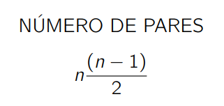

El problema es: Dado un conjunto de puntos P, hallar el par de puntos más cercanos.
La distancia entre dos puntos i y j es:
Solución Bruta
Podríamos obtener todos los pares de puntos que existen, comparar dichos pares y quedarse con el más pequeño.
Eso nos generaría:

La solución es rápida y corta con casos pequeños, pero al incrementar el número se convertiría en una búsqueda exhaustiva.
Solución con Divide y vencerás
Podríamos obtener todos los pares de puntos que existen, comparar dichos pares y quedarse con el más pequeño.
Eso nos generaría: